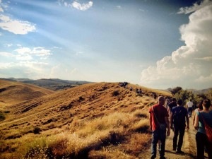

OpenPompei è stato progettato per fare due cose: servire da struttura di supporto per le politiche di trasparenza del Grande Progetto Pompei; e usare questa trasparenza come volano per portare persone, imprese, organizzazioni a occuparsi di Pompei – contribuendo idee, partecipando alla discussione, elaborando dati. Questo ha un valore in sé, e ne ha ancora di più se costituisce un’esperienza da cui poi possiamo imparare, per migliorare le politiche di coesione e di sostegno allo sviluppo in generale.
Peccato che, negli otto mesi in cui ho lavorato a questo progetto, non abbiamo fatto veri progressi verso nessuno di questi due obiettivi. Questo ha portato alcune persone che stimo a chiedersi, con affetto ironico (almeno spero) e con ragione, che fine ha fatto OpenPompei. Cos’è successo?
Eravamo partiti benissimo. Sono uscito dal primo incontro con la soprintendenza Napoli-Pompei molto contento: sembrava che l’idea di aprire i dati avesse fatto breccia. Grazie alla collaborazione tra l’open archeologo Gabriele Gattiglia e il geohacker in capo Maurizio “Napo” Napolitano abbiamo rapidamente montato un sito dimostrativo (con dati di esempio, in attesa di quelli veri) sugli interventi di restauro.
Nel frattempo, però, era partita la riorganizzazione dell’intervento dello Stato a Pompei. Il nuovo governo ha deciso di dare un segno forte, creando la figura di un direttore generale al MiBAC che si occupasse solo di Pompei e separando la soprintendenza speciale di Pompei da quella di Napoli. Decisioni così radicali costano inevitabilmente molto tempo: questa è stata incorporata in un decreto legge di inizio agosto 2013; la scelta del direttore generale è stata formalizzata a dicembre; il decreto che lo nomina formalmente è stato firmato il 10 gennaio 2014. Quanto al soprintendente, è stato scelto il 23 gennaio, ma non prenderà servizio prima di marzo. Nell’attesa che la nuova squadra venisse nominata e prendesse le redini del Grande Progetto Pompei e del parco archeologico, i dirigenti uscenti si sono limitati a gestire l’esistente, senza prendere nuove decisioni. Anche l’operazione di OpenPompei sugli open data archeologici è stata bloccata dalla mancanza di qualcuno che si prendesse la responsabilità di rilasciare i dati della soprintendenza in Creative Commons o IODL.
Come parare il colpo? Abbiamo deciso che, mentre continuiamo a spingere per gli open data del Grande Progetto Pompei e della soprintendenza, potevamo cominciare da subito a contribuire a portare Pompei nella comunità civic hacker nazionale e in prospettiva europea. Siamo stati pensati come un’interfaccia tra istituzioni e società civile: se le prime hanno bisogno di tempo per riorganizzarsi, noi intanto possiamo partire dalla seconda. Back to basics.
Ci è sembrato che il nostro contributo iniziale possa essere pensato come una serie di prototipi: attività anche piccole, ma che costruiscono valore; possono essere esportate e replicate se funzionano; e lasciano un’esperienza comune tra OpenPompei e chi si occupa di trasparenza e dati aperti sul territorio. Per fare questo, abbiamo passato l’autunno a
- individuare iniziative di civic hacking in programma, o che qualcuno avrebbe voluto organizzare nell’area vesuviana, e stringere alleanze con i loro promotori per allinearle con i nostri obiettivi di progetto.
- riscrivere il budget di OpenPompei per individuare le risorse necessarie a queste attività comuni.
- organizzare materialmente il primo gruppo di queste attività.
Dopo questa fase, non molto divertente ma necessaria, a gennaio abbiamo potuto rientrare in azione. Tra febbraio e marzo abbiamo in calendario le prime tre iniziative: siamo alfieri (!) di A Scuola di Open Coesione per Napoli, con lezione il 10 febbraio; il primo fine settimana di marzo facciamo il monitoraggio civico di tre beni confiscati alla camorra con Monithon; e il 28-30 marzo partecipiamo al raduno nazionale di Spaghetti Open Data a Bologna, con i risultati del monitoraggio civico. Su ciascuna di queste cose, e su diverse altre in calendario scriveremo a parte. Siamo alla ricerca di nuove idee sulla stessa vena – piccole cose, concrete, con il carattere di prototipo. Cosa fareste voi a Pompei?
Siamo riusciti a evitare la paralisi, ma questo non vuol dire che vada tutto bene. Prima di tutto abbiamo perso tempo, che in Italia è particolarmente grave perché siamo in ritardo su moltissime cose. In più, Pompei è un luogo importante a livello nazionale. Le condizioni di contesto in cui lavoriamo sono determinate da soggetti ben più grandi di noi, e non possiamo fare altro che prenderle come un dato di fatto e cercare di adattarci. Ma questo si sapeva anche prima: l’Italia, la Campania, l’area vesuviana non sono luoghi facili. Anche con il massimo dell’impegno, anche con il massimo appoggio da parte dello Stato, tutto quello che possiamo fare è provare, sapendo che tante persone capaci e motivate hanno fallito o ottenuto successi parziali. Il successo non è garantito, e non lo è mai stato.
Nove mesi fa i miei collaboratori e io abbiamo deciso di provarci. Non abbiamo cambiato idea. Abbiamo ancora due anni di tempo per muovere qualcosa. Se questi temi interessano anche voi, ci trovate qui.


{kind=link}
{kind=link}